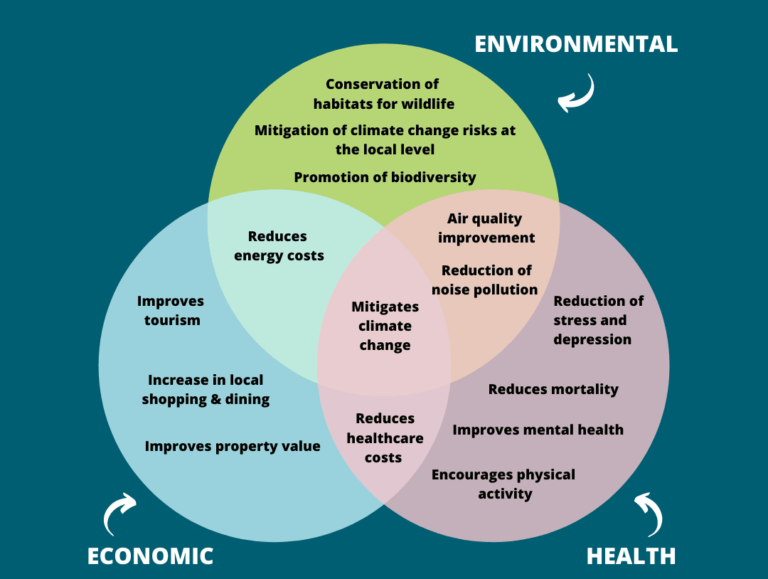
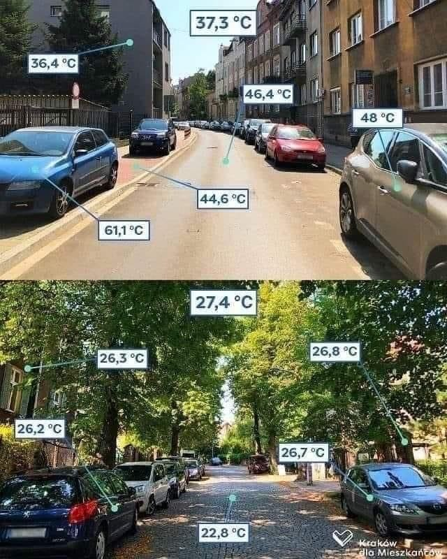
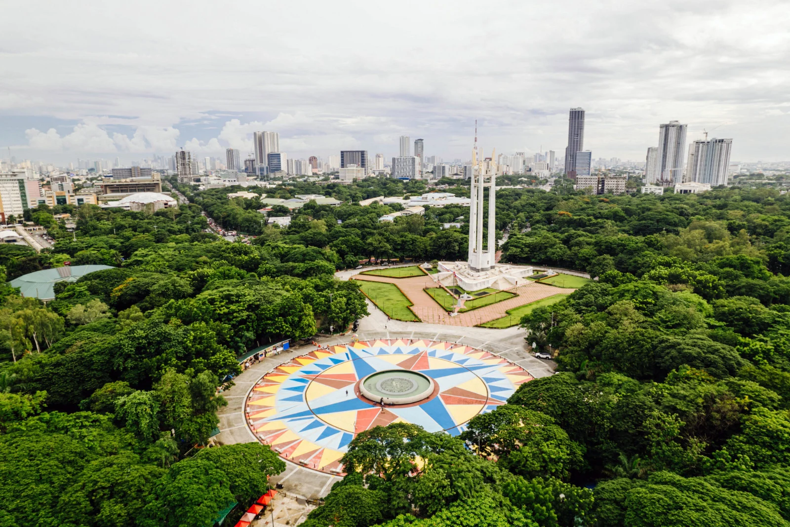

Ecological Benefits of Greener Urban Spaces
Green cities are more than attractive places to live...
Why Green Cities Matter
Urban greenery is far more than visual decoration. It is a functional part of modern city survival. Trees, rooftop gardens, wetlands, planted walls, and recycled growing systems work together to stabilize urban climates. In densely built environments, concrete, asphalt, and steel absorb large amounts of heat during the day and slowly release it at night, creating what is known as the urban heat island effect. This leads to higher nighttime temperatures, increased energy use for cooling, and greater health risks during heatwaves.
Vegetation helps reverse this imbalance through natural cooling processes. Trees and plants provide shade that reduces surface temperature, while transpiration (the release of water vapor from leaves) actively cools surrounding air. In addition, green infrastructure improves stormwater management by slowing down rainfall, increasing water absorption in soil, and reducing pressure on drainage systems. This helps prevent flooding and supports groundwater recharge.

Cooler Urban Temperatures
Urban vegetation significantly reduces local heat buildup by providing shade and releasing moisture into the air. Trees block direct sunlight from reaching roads, rooftops, and buildings, while plants cool the surrounding environment through evapotranspiration. This natural cooling effect helps reduce the urban heat island phenomenon, making cities more livable during extreme summer conditions and lowering the need for air conditioning.

Better Air Quality
Green spaces act as natural air filters by capturing airborne dust, absorbing pollutants such as carbon dioxide and nitrogen oxides, and releasing oxygen. Dense vegetation also helps reduce the concentration of particulate matter in the air, which is especially important in traffic-heavy urban areas. Over time, this leads to healthier respiratory conditions and improved overall public health.

Water Management
Urban green systems such as parks, rain gardens, and wetlands play a critical role in managing water flow. Instead of allowing rainwater to immediately rush into drainage systems, vegetation slows it down, absorbs part of it into the soil, and filters pollutants naturally. This reduces flood risks, prevents sewer overload, and helps maintain a stable water cycle in cities.
Biodiversity Support
Even small urban green spaces can function as micro-ecosystems that support biodiversity. Gardens, trees, and wetlands provide essential habitats for birds, bees, butterflies, and other pollinators. These organisms are crucial for maintaining ecological balance, supporting food production, and sustaining plant reproduction in both urban and surrounding rural environments.
How Small Actions Create Big Impact
A green city does not need to start with large parks or expensive infrastructure. It can begin with one planter, one container wetland, or one rainwater system. These small projects combine to create meaningful environmental change.
Over time, these actions reshape how people see waste and space. Everyday materials become tools for sustainability, turning rooftops and small areas into living ecosystems.
